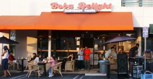

Boba Delight is the premiere beverage oasis in Koreatown, where they offer an extensive menu of drinks from ice cold smoothies to hot comforting teas. With the recent addition of Frozen Fusion ice cream, Boba Delight is setting the standard by which all other shops follow! They continuously stride to provide only the finest quality product and a comfortable place for you to enjoy it.
Boba Delight was founded under Beverage Oasis, Inc. in June of 2001. Being the first boba specialty shop in the Koreatown, they were immediately greeted with tremendous success. At the time, "boba" was already popular amongst the Korean youth and young adults, but unfortunately the only places these people could get it were at least 10 miles away! Boba Delight filled the need for those who were "bobaddicted." Featured in the Korean Times in July and September of 2001 and again in March 2003, they are no stranger to the limelight as we were interviewed for the MTV show "Straight from the Streets," in April 2002. Here is just a few of their notable accomplishments:
- October 2001: Served boba at Van Nuys High School for the student
fair.
- March 2002: Passed out water to the participants for the 17th
running of the Los Angeles Marathon.
- November 2002: Served boba at CSUN for the cast & crew of
the "Legally Blonde II - Red, White, & Blonde" at the request
the executive producer, Reese Witherspoon.
- January 2003: Introduced the addition of "Frozen Fusion"
ice cream to our menu in conjunction with our redesigned service counter.
- April 2003: Hosted the 2nd Annual Asian Hip Hop Summit.
Boba
Delight
700 S. Western Ave.
Los Angeles, CA 90005
(213) 380-3003